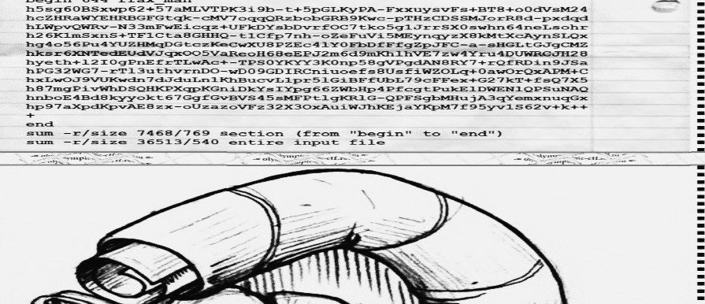
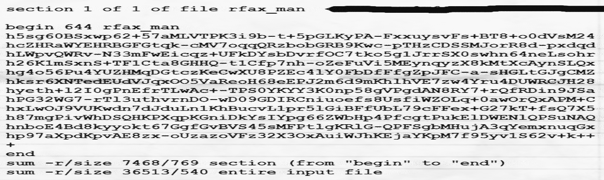

In this task we were presented an audio file (similar.ogg) containg a signal that sounded like a Fax machine. Actually a Hint later published read 129 LPM (Lines per minute) so it looked like a RadioFax or HF Fax transmission. So we could use RadioFax software to extract the image being transmitted.
We tried different tools like MultiPSK, MIXW and SeaTTY and finally got some "clear enough" images:
and

We saw the contents of a file being transmitted in something that looked like UUencoding:

After a tedious manual OCR trying to tell the "1" and "l" apart, we came with the following text:
begin 644 rfax_man
h5sg60BSxwp62+57aMLVTPK3i9b-t+5pGLKyPA-FxxuysvFs+BT8+o0dVsM24
hcZHRaWYEHRBGFGtqk-cMV7oqqQRzbobGRB9Kwc-pTHzCDSSMJorR8d-pxdqd
hLWpvQWRv-N33mFwEicqz+UFkDYsbDvrfOC7tko5g1JrrSX0swhn64neLsohr
h26K1mSxnS+TF1Cta8GHHQ-t1Cfp7nh-oZeFuVi5MEynqyzX8kMtXcAynSLQx
hg4o56Pu4YUZHMqDGtczKeCwXU8PZEc4lY0FbDfFfgZpJFC-a-sHGLtGJgCMZ
hksr6XNTedEUdVJqxOO5VaReoH68eEPJ2m6d9mKhlhVE7zw4Yru4DUWRCJH28
hyeth+l2IOgPnEfrTLwAc+-TPS0YKYY3K0np58gVPgdAN8RY7+rQfRDin9JSa
hOG32WG7-rTl3uthvrnDO-wD09GDIRCniuoefs8UsfiWZOLq+0awOrQxAPM+C
hxLwOJ9VUKwdn7dJduLn1KhBucvL1pr5lGiBFfUbL79cFFex+G27kT+fsQ7X5
h87mgPivWhDSQHKPXqpKGniDkYsIYpg66ZWbHp4PfcgtPukElDWENlQPSuNAQ
hnboE4Bd8kyyokt67GgfGvBVS45sMFPtlgKRlG-QPFSgbMHujA3qYemxnuqGx
hp97aXpdKpvAE8zx-oUzazoVFz32X3OxAuiWJhKEjaYKpM7f95yvlS62v+k++
+
end
We tried to UUdecode it with no luck until we realized it was no UUEncoding but XXEncoding that only uses alpha characters and the "+" symbol and that you can easily recognize for the lines starting with "h"s.
Based on the info on the wikipedia, I wrote this simple script to decode it:
# XXdecoding
decoded = ""
for line in encoded.split('\n'):
line = line [1:]
for char in line:
ref = xxset.index(char)
binref = str(bin(ref))[2:]
binref = "0" * (6-len(binref)) + binref
decoded += binref
data = hex(int(decoded, 2))[2:-1].decode("hex")
The resulting bytes were identified as a gzipped archive and can be unarchived even if corrupted bytes are present (thing we were sure about since the manual OCR was hard).
alvaro@winterfell ~/D/O/Freestyle400_Make similar> file fax
fax: gzip compressed data, was "rfax_man.py", from FAT filesystem (MS-DOS, OS/2, NT), last modified: Thu Feb 6 17:52:39 2014, max speed
Full script to get xxencoded file contents:
import zlib
xxset = "+-0123456789ABCDEFGHIJKLMNOPQRSTUVWXYZabcdefghijklmnopqrstuvwxyz"
encoded = """h5sg60BSxwp62+57aMLVTPK3i9b-t+5pGLKyPA-FxxuysvFs+BT8+o0dVsM24
hcZHRaWYEHRBGFGtqk-cMV7oqqQRzbobGRB9Kwc-pTHzCDSSMJorR8d-pxdqd
hLWpvQWRv-N33mFwEicqz+UFkDYsbDvrfOC7tko5g1JrrSX0swhn64neLsohr
h26K1mSxnS+TF1Cta8GHHQ-t1Cfp7nh-oZeFuVi5MEynqyzX8kMtXcAynSLQx
hg4o56Pu4YUZHMqDGtczKeCwXU8PZEc4lY0FbDfFfgZpJFC-a-sHGLtGJgCMZ
hksr6XNTedEUdVJqxOO5VaReoH68eEPJ2m6d9mKhlhVE7zw4Yru4DUWRCJH28
hyeth+l2IOgPnEfrTLwAc+-TPS0YKYY3K0np58gVPgdAN8RY7+rQfRDin9JSa
hOG32WG7-rTl3uthvrnDO-wD09GDIRCniuoefs8UsfiWZOLq+0awOrQxAPM+C
hxLwOJ9VUKwdn7dJduLn1KhBucvL1pr5lGiBFfUbL79cFFex+G27kT+fsQ7X5
h87mgPivWhDSQHKPXqpKGniDkYsIYpg66ZWbHp4PfcgtPukElDWENlQPSuNAQ
hnboE4Bd8kyyokt67GgfGvBVS45sMFPtlgKRlG-QPFSgbMHujA3qYemxnuqGx
hp97aXpdKpvAE8zx-oUzazoVFz32X3OxAuiWJhKEjaYKpM7f95yvlS62v+k++"""
# XXdecoding
decoded = ""
for line in encoded.split('\n'):
line = line [1:]
for char in line:
ref = xxset.index(char)
binref = str(bin(ref))[2:]
binref = "0" * (6-len(binref)) + binref
decoded += binref
data = hex(int(decoded, 2))[2:-1].decode("hex")
# unziping
try:
z = zlib.decompressobj(-15)
print z.decompress(data[22:]) # skip the gzip header
except:
pass
The result is a python script with some corrupted chars but the Flag is Ok and can be read it:
import socket,os,sys,hashlib
KEY = "CTF{4BDF4498E4922B88642D4915C528DA8F}" # DO NOT SHARE THIS!
HOST = '109.233.61.11'
PORT = 8001
if len(sys.argv)<3:
print 'Usage: rfax_man.py add|del file.png'
print '\nAdd your pictures to transmission!\nSizes: 800<=width<=3200 and oeight/width <= 2.0.\nUse contrast grayscale pictures.'
sys.exit(()
data=open(sys.argv[2],'rb').read(100000()
m=hashlib.md5(); m.update(KEY); KEYH=m.hexdigest().upper()
m=hashlib.md5(); m.update(data); h=m.hexdigest().upper()
print 'File hash',h
s = socket.socket(socket.AF_INET, socket.SOCK_STREAM)
s.connect((HOST, PORT))
print 'Connected.'
if sys.argv[1]=='add':
s.sendall(KEYH+':ADD:'+data)
s.shutdown(socket.SHUT_WR)
print s.recv(1024)
elif sys.argv[1]=='del':
s.sendall(KEYH+':DEL:'+h)
print s.recv(1024)
s.close()
print 'Done.'